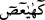
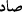
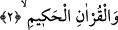
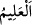
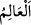
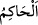
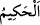
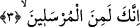

olmadığı Allah Teâlâ’nın sırlarındandır.” buyurdu.
Şu rivâyet de bunu te’yid eder: Cebrâil (a.s.) “
” kavli ile indiğinde “
/kâf”
deyince Hz. Peygamber (a.s.) “Bildim” dedi. Cebrail (a.s.) “ /hâ” deyince yine
“Bildim” dedi. Cebrail (a.s.) “ /yâ” deyince yine “Bildim” dedi. Cebrail (a.s.)
/ayn
deyince yine “Bildim” dedi Cebrail (a.s.) “
/sâd” deyince yine “Bildim” dedi. Bunun
üzerine Cebrâil (a.s.): “Benim bilmediğimi sen nasıl bildin?” diye sordu.
Fakir (Bursevî) der ki: Başkaları şöyle dursun ümmetin kâmil fertlerinden hiçbir
kimsenin ulaşamadığı kemal ve olgunluk makamına şüphesiz Peygamberimiz (a.s.)
ulaşmıştır. Peygamberimiz (s.a.)’in mi’rac gecesinde bütün mevki ve makamları
geçmesi buna delâlet eder. Bundan dolayı ‘İnsanlardan, cinlerden ve meleklerden hiçbir
kimse Peygamberimiz (s.a.)’in bildiğini bilememiştir’ denilmesi câizdir. Çünkü
hepsinin ilimleri O’nun ilmine nisbetle denizden bir damla gibidir. Beşerin haddine
nisbetle daha fazlası olamayacak şekilde harflerin hakikatlerinin ilmi de O’na âiddir.
O’nun dışındakiler ise kendi istîdad ve kabiliyetlerine göre bu harflerin gereklerini ve
bazı hakîkatlerini bilirler. İşte hâlin verdiği bilgi budur. Gizlilikleri, sırları, Kitabının
içinde dürülü olanları ve hitabının ihâta ettiklerini en iyi bilen Allah Teâlâ’dır.
2. Hikmet dolu Kur’an hakkı için,
“
” kelimesi “
(bilen)” mânâsına olduğu gibi “
”de “
(hüküm veren)”
mânâsınadır. Çünkü Kur’an muhtevasındaki hükümlerle hüküm verir. Yahut Kur’an her
türlü çelişki, kusur ve değişmeden muhkemdir/korunmuştur. Nitekim Allah Teâlâ:
“Elbette onu Biz koruyacağız.” (el-Hicr 15/9) buyurur. “Hakîm”, nazmı ve üslûbu
muhkem/sağlam yapılmış, mânâsı ve muhtevâsı sapasağlam kılınmış demektir. Ya da
“hakîm” hikmet sâhibi demektir. Yâni Kur’an hikmeti ihtivâ eder ve ona şâmildir.
Çünkü Kur’an her hikmetin menbaı, her öğüdün ma’denidir. Buna göre “
” de bir
nisbet mânâsı vardır. Bu söz, onu söyleyenin sıfatı ile vasfetmek kabilindendir. Yâni “
” söyleyeni hakîm olan demektir.
3. Sen şüphesiz peygamberlerdensin.
Ey rasullerin en kâmili ve hepsinin en üstünü! “Sen şüphesiz peygamberlerdensin.”
Bu söz, Hz. Peygamber (s.a.)’in zâtına yemin etme şerefinden sonra O’na yüzüne karşı
doğrudan olan bir hitaptır. Bu cümle kâfirlerin Hz. Peygamber (s.a.) hakkındaki “Sen